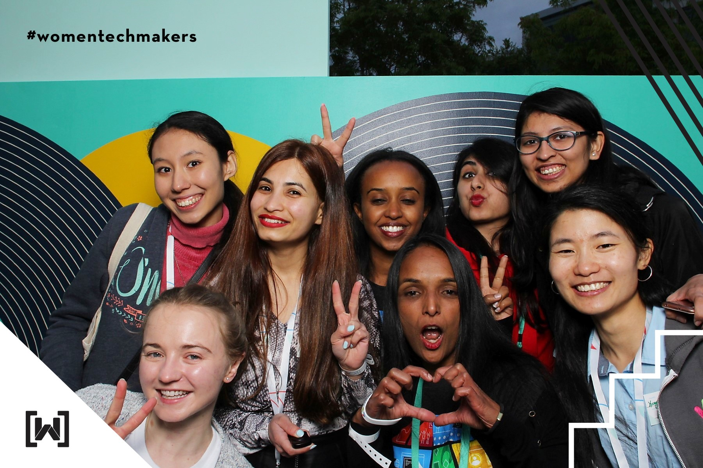
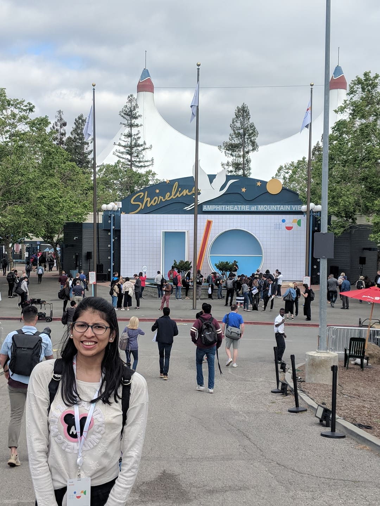
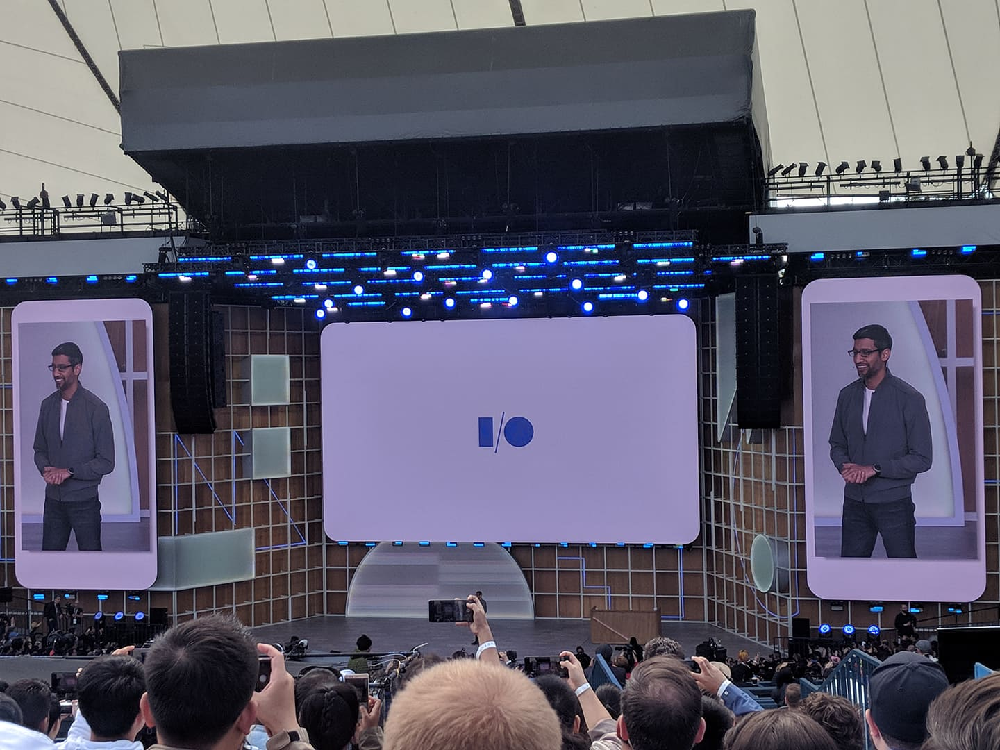
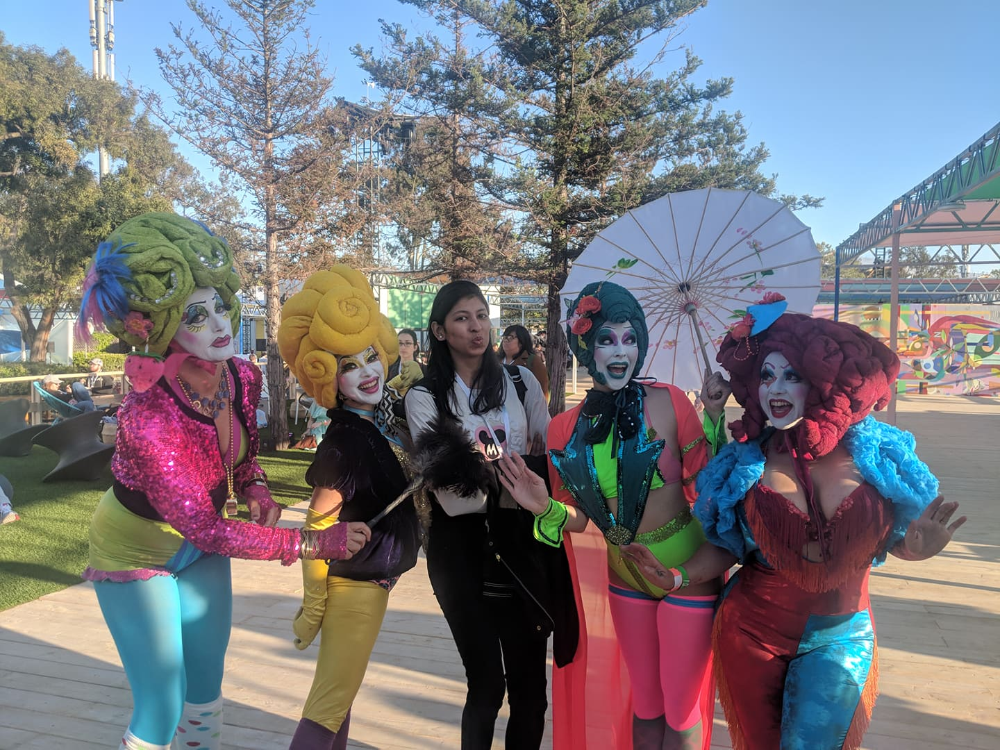
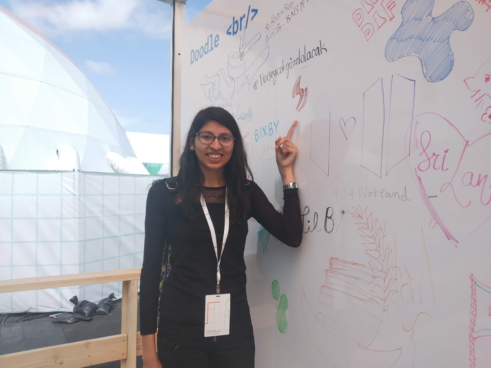
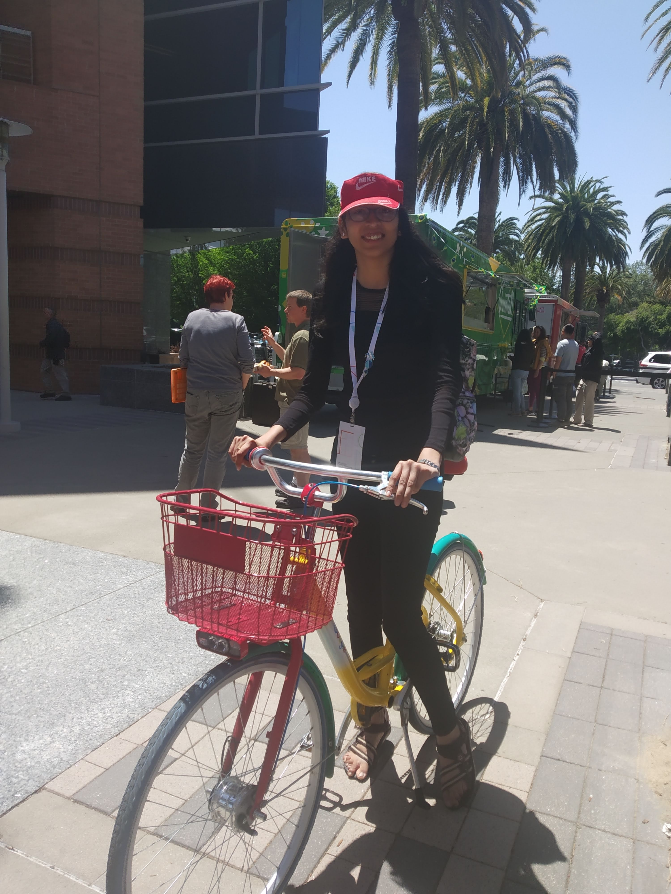
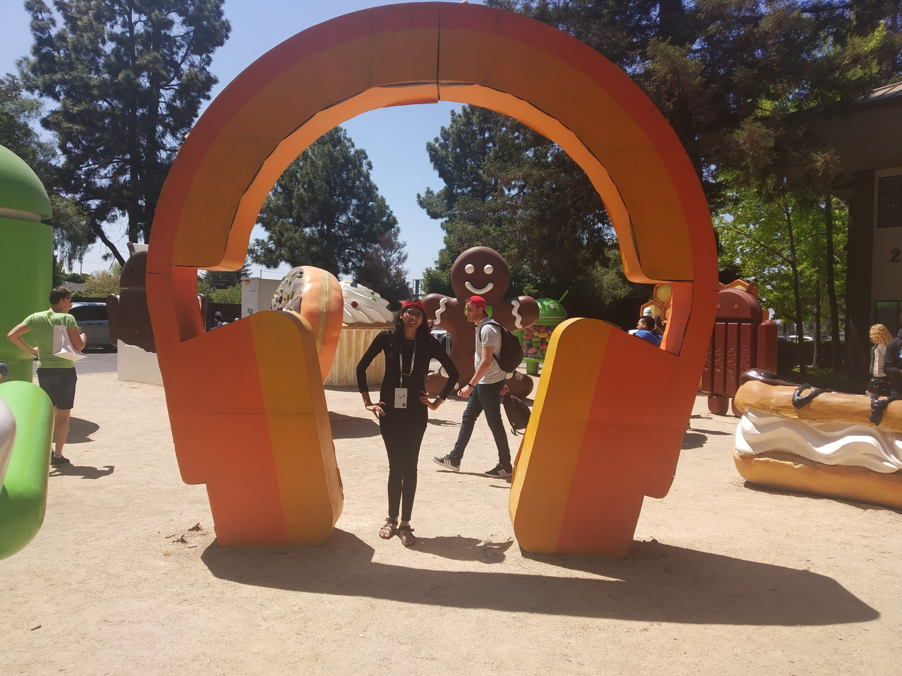
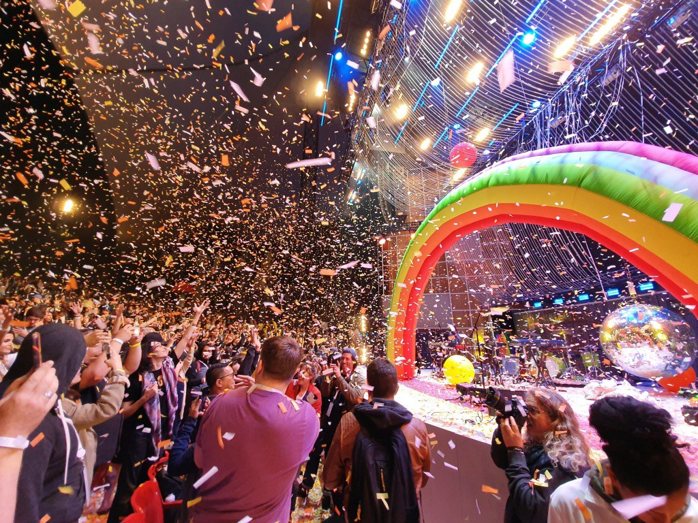
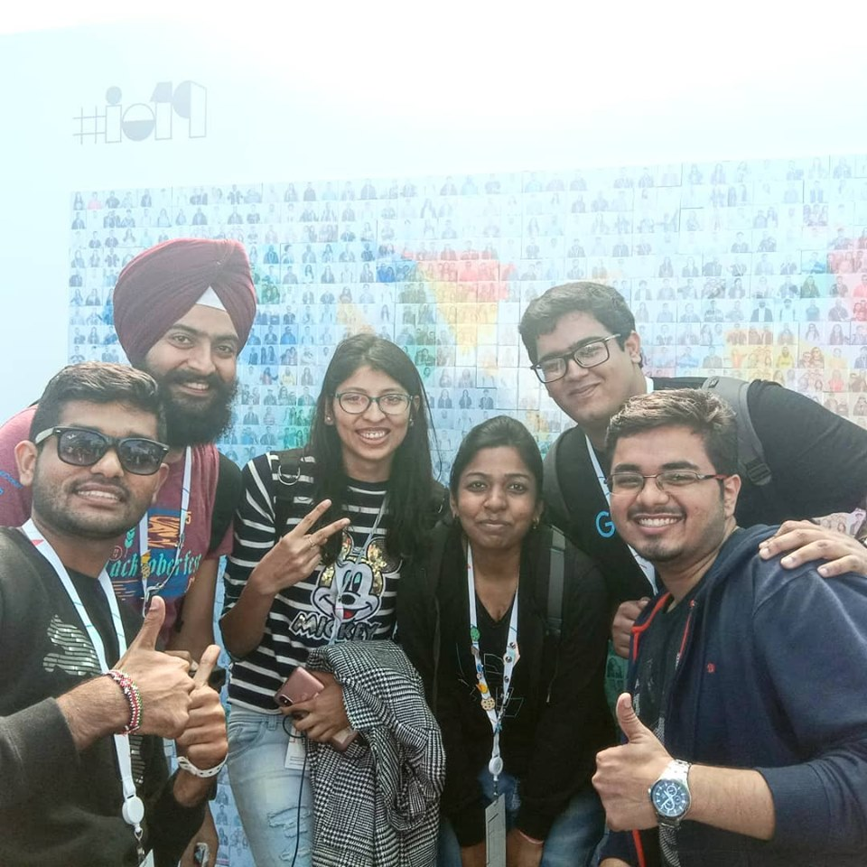

I had the privilege of attending the 2019 edition of Google IO — Google’s annual event at Mountain View, California. Being my first IO (and the first trip to the US), there was quite a lot to take in. I share my experience at Google I/O in this piece of writing.
“I’m Hritvi Bhandari, a student at Indian Institute of Technology, Roorkee pursuing an undergraduate degree in Computer Science."
Google ‘’Innovation of the Open’’ ( I/O ) is one of the largest developer conferences that is hosted by Google every year. This year, the I/O was held from the 7th of May and had the tenure of running for 3 days.
This was exciting and overwhelming for me. To attend the I/O is arguably every developer’s dream. And could not believe that mine was coming true in epic proportions. Stepping into a world where like-minded people, who seek growth and improvement was a sweet spot for anyone who finds joy in the progress of others. Google I/O was a hub for connecting people. And I am proud to say, what I consider now to be a dim perception of the world, my perspective on what can be achieved has changed and is still changing as I write this blog.
How I got the invitation???
Google hosts a contest every year called codejamio for women. Code Jam to I/O for Women is one way to bring women (students and professionals) from around the globe together, working to solve algorithmic challenges in 2.5 hours. The top 150 on the scoreboard receives a ticket and reimbursement to offset travel expenses to Google I/O. This year, the reimbursement was $750 maximum, depending on the country you are traveling from. More details about this contest can be found here: https://codingcompetitions.withgoogle.com/codejamio/
I came 45th in that contest and therefore was invited to attend one of the largest developer conference.
Let’s leave the document verification, visa application, the long long flight to San Francisco and all the excitement aside and fast forward to 6th May, 2019(Day 0).Women Techmakers Dinner | 6th May
Google’s Women Techmakers hosts this amazing WTM dinner every year the night before Google I/O. I felt so delighted to meet women from all over the globe excelling in various domains. I got to learn a lot from all of them. Networking with them and getting to know their story in technology was quite intriguing.
Day 1 | 7th May
I had somehow managed to collect the IO badge the day before. So I had not to need to worry about the huge rush for collecting the badges and therefore I made my way directly to the Shoreline Amphitheatre
The time had come! I was super excited to get the keynote going. Well well well! Sundar Pichai was right in front of us! The energy in the audience built up as he walked in, all praising as he kicks off the I/O by giving the general introductions, repeating Google’s mission, cracking some light jokes and overviews of what was to come over the next 3 days and launching the Google Pixel 3A.
Soon after the keynote, we had a short lunch break and then continued with a developers keynote, where Google introduced and outlined the new features and updates on tools used by developers. As the day progressed, there were multiple workshops happening on various topics at the same time and continued for the rest of the afternoon and the next 2 days. These workshops were around Machine learning and Artificial Intelligence, Augmented reality, Web development, Cloud, Maps, Android, Accessibility and many others. There was also a dedicated section for all community activities called the Community Lounge, a place where all communities had their events, and also a great place to network with people from all around the world in different communities and workplaces. This was my favorite place to hung up for the rest of the three days.
Day 2 | 8th May
The day began with attending a session on ARCore. It was then I met with a guy who said that the sessions would also be available on youtube when you are here just connect with as many people as you can. After that, I went to the Community Lounge. This was one of the cool places to chill out with GDG members and DSC Leads around the world. Lots of fun!
I then took a walk to the Googleplex, wasn’t that far, and began by taking some pictures with the first Google building in sight, receiving a warm welcome by the welcome guy of Google, Peter the greeter, just outside Googleplex and taking photos all along the way. Later I went to the Google Merchandise Store and bought some awesome Google stuff, and continued touring the campus and ended off with pictures at the Android park.

The day concluded with an exciting concert by The Flaming Lips (They used AI/ML for the beats, how cool is that?!)
Day 3 | 9th May
There were not many sessions and workshops that interested me on this day. So it all came down to networking with people, roaming around a bit and making some awesome memories that would last forever.
The day ended off with a trip to Stanford University with some awesome DSC Leads with whom I connected at the Google IO.

Conclusion
Google I/O was a memorable experience for me. I would like to thank Google, Code Jam team and Women Techmakers for this great opportunity and experience. It was a moment of the lifetime and definitely kicked it off my bucket list.